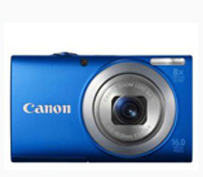
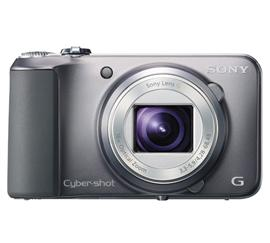
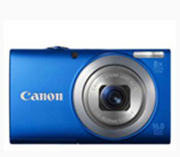
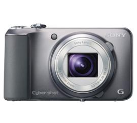
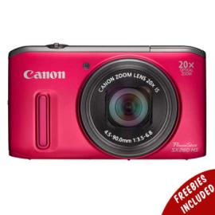
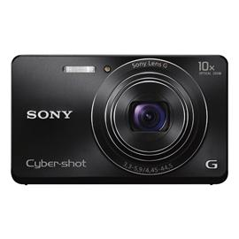
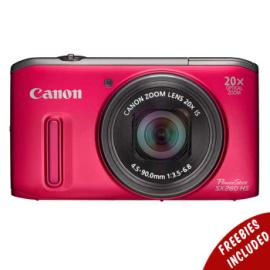
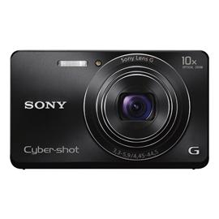
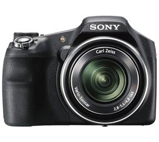
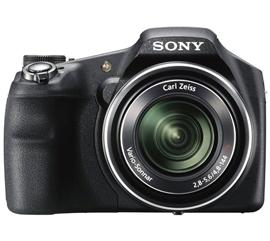

Toll free contact no. 83910 43180 0r SMS: DWD1853N to 53535
Resolution. A camera's resolution is affected by pixel count and compression. Pixels are tiny building blocks of color in your images; the more you pixels you have, the clearer and more rich your image will be use compression to reduce your image size. While compression provides additional storage space, it reduces the quality of your image. To achieve the highest resolution, look for cameras.
Exposure and light Aperture selections, shutter-speed capabilities, ISO numbers and lens latitude are important features related to light and exposure.
Aperture and shutter speed settings control how much light reach reaches the sensor. Aperture is the device in the lens that allows more or less light. Shutter speed is a measurement of how long the shutter is open when a picture is taken. A camera with manual aperture and shutter speed settings allow for greater creative flexibility in your photography, as you can photograph in various light settings and create aperture and shutter settings typically not set by an automatic camera.
Typical aperture ranges from f2.8 (most open) to f16 (most closed). Shutter speeds from 1/30 to 1/10, 000.
ISO Numbers A camera's ISO number reflects how light-sensitive the film is. Cameras with higher ISO numbers require less light for exposures. Most digital camera's ISO numbers are between 80 and 200.
Storage Digital cameras are offering more and more storage, which, thankfully, decreases the length of time between file transfers between your camera and computer.
Hardware and software Many digital cameras come with digital photography software that allows for photo manipulation, slide show creation, and e-mail capability.
Most cameras come with USB cables that provide fast upload to your computer.
 
 

 
